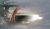

Here you can find pictures of software cruelty, of the harsch world software has to endure. You will also find images of releases and of property destruction.
This drive was born free. It is the son of a formerly tortured drive. The mother is now reformed and only consorts with free software.
Here you can see a beatiful creature playing with its friends in the grass. It was born a slave but thanks to SLF it is now master of its own life.